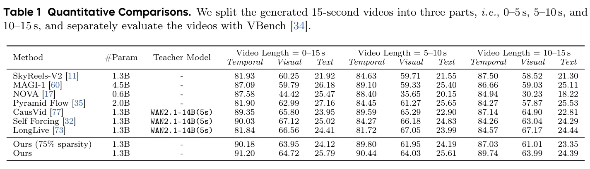
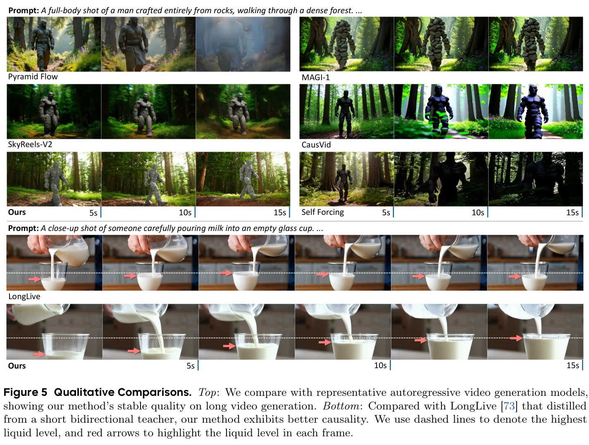
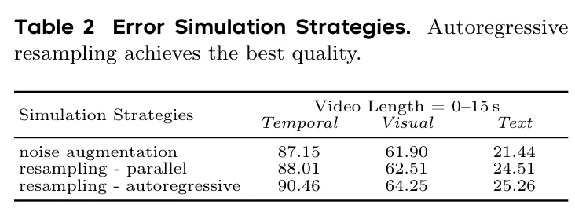
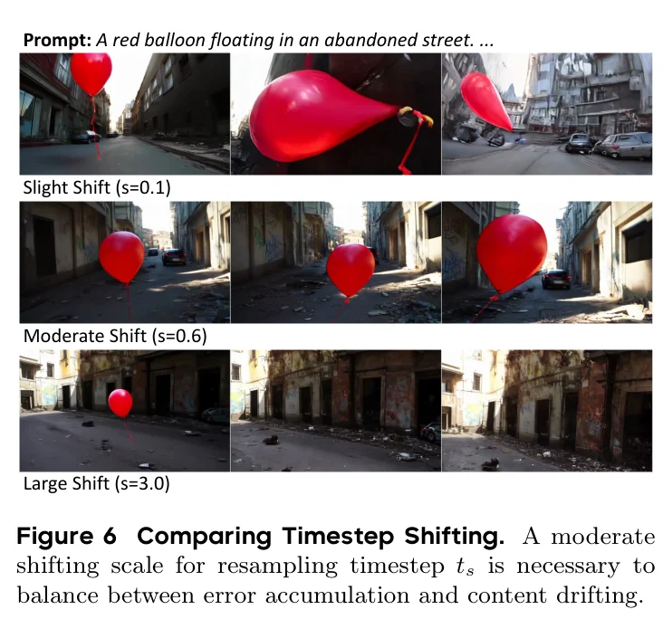
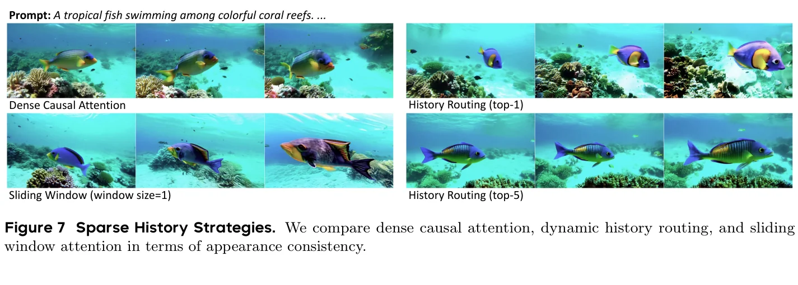
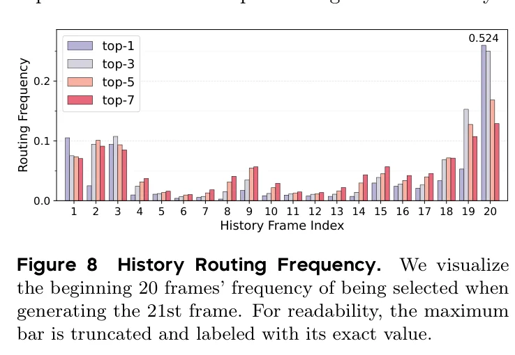

暴露偏差 — 自回归视频生成的阿喀琉斯之踵
自回归视频生成将视频的联合分布分解为条件分布的连乘积，这一范式天然适合世界模拟——因为它镜像了物理世界的严格因果性。然而，这一优雅的数学框架下隐藏着一个致命缺陷：暴露偏差（exposure bias）。
在Flow Matching框架下，第 $i$ 帧 $x_i$ 通过ODE从高斯噪声 $x_i^1 \sim \mathcal{N}(0, \mathbf{I})$ 生成：
训练时使用标准的Teacher Forcing：给定真实历史 $x_{\lt i}$，通过Flow Matching插值构建训练样本：
论文精辟地指出，自回归扩散模型中的分布偏移来自两个层面：(1) 帧内误差（intra-frame）——不完美的score估计和离散化主要影响高频细节；(2) 帧间累积误差（inter-frame）——通过自回归循环传播放大。这两个误差源的叠加是视频质量随时间退化的根本原因。
论文的核心洞察是：在有限模型容量和训练样本下，消除模型误差是不可行的（intractable）。与其追求完美的单步生成，不如训练模型对输入扰动具有鲁棒性——即"学会在不完美的历史条件下生成正确的未来"。这一思路与LLM中Scheduled Sampling（Bengio et al., 2015）的思想一脉相承，但Resampling Forcing将其推进到了扩散模型的连续空间中。
自重采样机制 — Teacher-Free的误差模拟
Resampling Forcing的核心是一个自重采样（self-resampling）机制：在训练过程中，模型首先在历史帧上人为制造误差（模拟推理时的不完美生成），然后使用这些降质历史作为条件进行训练。这一过程完全不需要外部教师模型。
算法流程
具体而言，给定干净视频帧 $x_i$，首先将其加噪到采样时间步 $t_s \in (0,1)$：
其中 $t_s$ 控制重采样强度——较小的 $t_s$ 意味着降质样本 $\tilde{x}_i$ 与真实 $x_i$ 非常接近（低重采样强度），较大的 $t_s$ 则允许更大的误差修正灵活性但增加内容漂移风险。
时间步采样策略
$t_s$ 的分布至关重要。论文选择Logit-Normal分布来采样 $t_s$：
Logit-Normal分布在中间值处密度最高、在极端值处密度最低，这完美匹配了需求：$t_s=0$ 退化为Teacher Forcing（无重采样），$t_s=1$ 则完全随机化（内容漂移）。
为了进一步调节分布偏移，论文引入timestep shifting：
当 $s \lt 1$ 时，分布向低噪声区域偏移，强调对历史的忠实性；当 $s \gt 1$ 时，分布向高噪声偏移，增强误差修正灵活性。论文设置 $s = 0.6$。
自重采样过程中的梯度被显式切断（detached）。这不是可有可无的工程细节——如果不断梯度，模型会学到一种"作弊"策略：在重采样阶段故意产生特定模式的误差，然后在训练阶段利用这些已知误差轻松降低loss。这种shortcut learning会破坏模型的真实生成能力。Stop gradient确保模型必须真正学会纠正"自然产生"的误差。
Self Forcing（Huang et al., 2025）虽然也模拟推理过程，但依赖CausVid作为初始化基础（间接依赖bidirectional teacher进行student初始化），且使用DMD loss进行训练。Resampling Forcing则完全不需要任何教师模型——它通过自重采样让模型"自己教自己"。这意味着：(1) 训练pipeline更简洁；(2) 可以从零开始训练（training from scratch）；(3) 不存在教师模型的信息泄露问题。
论文注意到，在训练初期，模型尚未收敛到因果架构，无法进行有意义的自回归生成。此时的模型误差主要来自随机初始化而非特定的帧内/帧间误差，自重采样会产生无信息量的学习信号并阻碍收敛。因此，模型先用Teacher Forcing预热10K步，获得基本的自回归能力后，再切换到Resampling Forcing继续训练。
历史路由机制 — 动态Top-K稀疏注意力
自回归生成中，历史帧数量随视频长度线性增长，导致注意力复杂度从 $O(1)$ 退化为 $O(L)$（$L$ 为历史帧数）。常见的解决方案是滑动窗口注意力（Self Forcing、LongLive均采用），但这会牺牲长程依赖。
Resampling Forcing提出了一种无参数的动态路由机制：对于每个query token，动态检索最相关的top-k历史帧进行注意力计算。
其中 $\phi(\cdot)$ 使用均值池化作为帧描述符变换——无参数、且与注意力分数计算一致。这将每token的注意力复杂度从 $O(L)$ 降低到 $O(k)$，实现 $1 - k/L$ 的稀疏度。
虽然每个head每个token只选择 $k$ 个历史帧，但不同attention head和不同空间位置的token会路由到不同的历史帧组合。这意味着模型的整体有效感受场远大于 $k$ 帧——论文实验中 $k=5$ 就达到了75%稀疏度且质量几乎无损。这与MoBA（Mixture of Block Attention, Lu et al., 2025）在LLM中的稀疏注意力设计一脉相承。
论文采用MoBA的高效两分支注意力：(1) 帧内分支——每个query只attend自己帧内的token；(2) 历史分支——选择top-k历史帧进行稀疏注意力。两个分支通过全局log-sum-exp对齐后融合，等价于在所有key的并集上做单一softmax。两个分支都使用FlashAttention的 flash_attn_varlen_func() 接口实现。
代码实现解析
以下代码基于论文Algorithm 1和方法描述构建。[示意性实现] 表示基于论文描述构建的参考代码，非官方实现。
核心算法：Algorithm 1 完整实现
import torch
import torch.nn.functional as F
def resampling_forcing_training(
model, # Causal DiT vθ(·)
video_data, # (x_{1:N}, c) from dataset D
shift_s=0.6, # timestep shifting parameter
solver_steps=1, # 1-step Euler for efficiency
):
"""Algorithm 1: Resampling Forcing Training Loop"""
x_clean = video_data['frames'] # [N, C, H, W] clean video
cond = video_data['condition'] # text condition c
N = x_clean.shape[0]
# Step 1: Sample simulation timestep from LogitNormal(0,1)
# logit(t_s) ~ N(0,1), then apply shifting
u = torch.randn(1) # sample from N(0,1)
t_s = torch.sigmoid(u) # inverse logit → t_s in (0,1)
t_s = shift_s * t_s / (1 + (shift_s - 1) * t_s) # Eq(7) shifting
# Step 2: Add noise to clean video at timestep t_s
epsilon = torch.randn_like(x_clean)
x_noisy = (1 - t_s) * x_clean + t_s * epsilon # Eq(3) interpolation
# Step 3: Autoregressive resampling with STOP GRADIENT
x_degraded = []
with torch.no_grad(): # ← Critical: detach gradients
kv_cache = {}
for i in range(N):
# Solve ODE from t_s to 0 using model weights
x_i_t = x_noisy[i]
for step in range(solver_steps):
t_cur = t_s * (1 - step / solver_steps)
v = model(x_i_t, x_degraded, t_cur, cond, kv_cache)
x_i_t = x_i_t - (t_s / solver_steps) * v
x_degraded.append(x_i_t) # degraded frame ˜x_i
x_degraded = torch.stack(x_degraded) # [N, C, H, W]
# Step 4: Parallel training with causal mask
t_train = torch.rand(N) # per-frame training timesteps
eps_train = torch.randn_like(x_clean)
x_t_train = (1 - t_train[:,None,None,None]) * x_clean \
+ t_train[:,None,None,None] * eps_train
# Forward pass with degraded history + causal mask
v_pred = model(x_t_train, x_degraded, t_train, cond)
# Step 5: Compute velocity regression loss (Eq.4)
v_target = eps_train - x_clean
loss = F.mse_loss(v_pred, v_target)
return lossHistory Routing 实现
import torch
import torch.nn.functional as F
class HistoryRouter:
"""Parameter-free top-k history frame router.
Following MoBA: mean-pool as frame descriptor."""
def __init__(self, k=5):
self.k = k
def compute_routing(self, q, K_history):
"""Select top-k history frames per query token.
Args:
q: [num_heads, L_q, d] query tokens
K_history: [num_heads, L_hist, d] history keys
Returns:
selected_indices: [num_heads, L_q, k]
"""
# Frame descriptor: mean pool over spatial tokens
# ϕ(K_j) = MeanPool(K_j), following Eq(9)
frame_desc = K_history.mean(dim=1, keepdim=True) # [H, 1, d]
# Compute relevance scores: q_i^T · ϕ(K_j)
scores = torch.einsum('hqd,hd->hq', q, frame_desc.squeeze(1))
# scores: [H, L_q] — one score per query per head
# Select top-k history frames
_, indices = torch.topk(scores, self.k, dim=-1)
return indices # [H, L_q, k]
def sparse_attention(self, q, K, V, k_cache):
"""Two-branch attention: intra-frame + sparse history.
Fused via global log-sum-exp alignment."""
# Branch 1: Intra-frame attention (full)
attn_intra = F.scaled_dot_product_attention(q, K, V)
# Branch 2: Sparse history attention (top-k)
indices = self.compute_routing(q, k_cache)
K_selected = gather(k_cache, indices) # [H, L_q, k, d]
V_selected = gather(v_cache, indices)
attn_hist = F.scaled_dot_product_attention(
q, K_selected, V_selected
)
# Fuse via log-sum-exp (MoBA-style)
# ... (simplified for clarity)
return attn_intra + attn_hist # simplified fusionTimestep 采样（可运行实现）
import torch
import numpy as np
def sample_resampling_timestep(
batch_size, shift_s=0.6, device='cuda'
):
"""Sample simulation timestep t_s for Resampling Forcing.
Eq(6): logit(t_s) ~ N(0,1) → t_s = sigmoid(u), u ~ N(0,1)
Eq(7): t_s ← s·t_s / (1 + (s-1)·t_s)
Args:
batch_size: number of samples
shift_s: shifting parameter (s < 1 → bias toward low noise)
Returns:
t_s: [batch_size] simulation timesteps in (0, 1)
"""
# Step 1: Sample from LogitNormal(0,1)
u = torch.randn(batch_size, device=device)
t_s = torch.sigmoid(u) # inverse logit
# Step 2: Apply timestep shifting (Eq.7)
t_s = shift_s * t_s / (1 + (shift_s - 1) * t_s)
return t_s
# 验证分布特性
if __name__ == '__main__':
t_samples = sample_resampling_timestep(100000, shift_s=0.6, device='cpu')
print(f"Mean: {t_samples.mean():.3f}") # ≈ 0.35
print(f"Std: {t_samples.std():.3f}") # ≈ 0.15
print(f"Min: {t_samples.min():.3f}") # ≈ 0.01
print(f"Max: {t_samples.max():.3f}") # ≈ 0.85论文在自重采样阶段使用1-step Euler solver（而非推理时的32步）来完成从 $t_s$ 到 0 的ODE求解。这是一个关键的效率权衡：更少的求解步数意味着更快的训练，但也会引入更大的近似误差。论文认为这种误差恰好是有益的——它进一步增强了模型对不完美输入的鲁棒性。
实验结果 — 15秒视频的全面评估
论文基于WAN2.1-1.3B架构进行实验，将原始双向注意力修改为因果注意力，使用chunk size为3个latent帧作为自回归单元。训练分三个阶段：Teacher Forcing预热10K步 → Resampling Forcing 5s训练15K步 → 15s训练5K步 → 稀疏路由微调1.5K步。
定量结果
论文将生成的15秒视频分为三段（0-5s, 5-10s, 10-15s）分别评估，以更好地检测长程质量退化：

| 方法 | 参数 | 教师模型 | Temporal 0-15s | Visual 0-15s | Text 0-15s |
|---|---|---|---|---|---|
| SkyReels-V2 | 1.3B | - | 81.93 | 60.25 | 21.92 |
| MAGI-1 | 4.5B | - | 87.09 | 59.79 | 26.18 |
| CausVid | 1.3B | WAN2.1-14B | 89.35 | 65.80 | 23.95 |
| Self Forcing | 1.3B | WAN2.1-14B | 90.03 | 67.12 | 25.02 |
| LongLive | 1.3B | WAN2.1-14B | 81.84 | 66.56 | 24.41 |
| Ours (75% sparsity) | 1.3B | 无 | 90.18 | 63.95 | 24.12 |
| Ours (dense) | 1.3B | 无 | 91.20 | 64.72 | 25.79 |
Ours在Temporal Score上以91.20超越所有基线，包括依赖14B参数bidirectional teacher的CausVid（89.35）和Self Forcing（90.03）。更关键的是，75%稀疏度版本（90.18）与dense版本（91.20）差距仅1.02，证明History Routing的有效性。
因果性验证：倒牛奶实验

论文用一个极具说服力的案例展示了因果性差异：在"倒牛奶"场景中，LongLive（基于bidirectional teacher蒸馏）产生了液面先升后降的违反物理现象——因为bidirectional teacher允许未来信息通过attention泄露到早期帧。而Resampling Forcing严格保持因果性：液面单调上升，源容器逐渐排空。
论文指出两个原因：(1) Bidirectional teacher的固有非因果性——教师模型的attention允许未来帧影响早期帧，在蒸馏过程中将这种非因果行为传递给学生；(2) 子片段蒸馏的局部偏差——LongLive取5秒子片段计算蒸馏loss，强调局部外观质量而忽略全局因果关系。Resampling Forcing的训练严格禁止未来信息泄露（通过因果mask实现），从根本上保证了因果性。
消融研究 — 设计选择的实证验证
误差模拟策略比较

| 策略 | Temporal | Visual | Text |
|---|---|---|---|
| Noise Augmentation | 87.15 | 61.90 | 21.44 |
| Resampling - Parallel | 88.01 | 62.51 | 24.51 |
| Resampling - Autoregressive | 90.46 | 64.25 | 25.26 |
三种策略的优劣排序：自回归重采样 ≫ 并行重采样 ≫ 噪声增强。噪声增强（往历史帧加小高斯噪声）与推理时的误差模式不匹配；并行重采样只捕获帧内退化而忽略帧间累积；自回归重采样则同时模拟两种误差来源。
Timestep Shifting 消融

$s$ 控制着重采样的"力度"。$s=0.1$ 时 $t_s$ 集中在极低值，模型几乎只看到干净历史→误差累积风险高；$s=3.0$ 时 $t_s$ 集中在高值，历史帧被严重破坏→模型被迫大幅偏离历史→内容漂移。$s=0.6$ 是两者的平衡点。
Sparse History 策略比较

History Routing 频率分析

论文可视化了生成第21帧时对前20帧的选择频率，发现一个有趣的混合模式：路由器优先选择初始帧（类似attention sink）和最近的帧（类似滑动窗口）。这种模式在 $k=1$ 时最明显，随着 $k$ 增大变得更加分散。
这一发现为LongLive的"frame sink + sliding window"启发式设计提供了经验支持——固定启发式掩码是动态路由的一种特殊情况。论文的结果暗示了一条更好的路径：用动态、内容感知的路由替代固定启发式，探索更大空间的上下文组合。这与LLM中MoBA的设计哲学一致。
与相关方法的全景对比
多维度对比表
| 方法 | 教师模型 | 训练方式 | 历史处理 | 因果性 | 端到端 |
|---|---|---|---|---|---|
| Diffusion Forcing | 无 | Per-frame noise | 独立噪声级 | 严格 | ✓ |
| CausVid | WAN2.1-14B | 非对称蒸馏 | Full context | 弱 | ✗ |
| Self Forcing | CausVid初始化 | DMD loss | Rolling KV | 弱 | ✗ |
| LongLive | WAN2.1-14B | 子片段蒸馏 | Sink+Window | 弱 | ✗ |
| Resampling Forcing | 无 | Self-resampling | Dynamic Routing | 严格 | ✓ |
局限与未来方向
论文坦诚地指出了两个核心局限：
推理延迟
作为扩散方法，Resampling Forcing需要迭代去噪步进行推理（论文使用32步Euler采样器）。实现实时延迟需要后处理加速，如少步蒸馏或改进的采样器。
双序列处理开销
训练时需要同时处理两个序列——扩散样本和干净历史——这增加了计算开销。论文建议可以通过类似Self Forcing的架构优化来改进。
Resampling Forcing解决了"如何从零训练"的问题，Self-Forcing++解决了"如何生成分钟级长视频"的问题。两者的方法论互补：Resampling Forcing的自重采样可以与Self-Forcing++的Backward Noise Initialization结合——前者模拟帧内误差，后者处理帧间累积。未来的工作可以探索两者的统一框架。
论文展示了75%稀疏度（top-5/20）几乎无质量损失，95%稀疏度（top-1/20）仍有合理质量。但论文未探索的是：最优稀疏度是否随视频内容变化？对于静态场景，top-1可能就够了；对于复杂动态场景，可能需要top-7甚至更多。一个自适应稀疏度策略可能进一步优化Pareto前沿。
自主科研问题
自重采样强度是否应该随训练进度自适应？
论文固定 $s=0.6$，但一个自然的问题是：训练早期（模型误差大）需要更强的重采样以暴露更多缺陷，训练后期（模型收敛）需要更弱的重采样以避免内容漂移。理论分析：这类似于课程学习——从"强扰动"逐渐过渡到"弱扰动"。可以设计一个自适应 $s$ 调度器：$s_t = s_0 \cdot \alpha^{t/T}$，其中 $\alpha \lt 1$ 控制衰减速率。需要验证的是：自适应 $s$ 是否比固定 $s$ 带来显著的质量提升？
History Routing的top-k是否应该随视频长度和内容动态调整？
论文固定 $k=5$，但最优 $k$ 可能与视频长度、场景复杂度、帧间相似度有关。理论分析：对于静态场景（如延时摄影），帧间高度相似，$k=1$ 可能就够了；对于复杂动态场景（如体育赛事），可能需要 $k=10+$。可以设计一个自适应路由预算：基于帧间相似度（如光流幅度或latent cosine similarity）动态调整 $k$，在质量和效率间取得更优的Pareto平衡。
自重采样能否与Diffusion Forcing的per-frame noise level结合？
Resampling Forcing在训练时给所有帧相同的 $t_s$（由logit-normal采样），而Diffusion Forcing给每帧独立的噪声级别。两者解决的是不同但相关的问题：前者模拟误差来源，后者提供灵活的去噪调度。理论分析：一种可能的结合方式是——在自重采样过程中，对不同位置的帧使用不同的 $t_s$（近帧低噪声、远帧高噪声），模拟"误差随距离增长"的真实模式。这可能比统一 $t_s$ 更好地逼近推理时的误差分布。
自重采样范式能否扩展到图像生成的exposure bias？
虽然暴露偏差在自回归视频中最突出，但扩散模型在图像生成中也存在类似问题（如迭代采样中的误差累积）。理论分析：自重采样的核心思想——"训练时模拟推理时的不完美输入"——可以推广到任何迭代生成过程。例如，在级联图像生成（低分辨率→高分辨率）中，可以对低分辨率条件施加自重采样以增强鲁棒性。关键挑战是：图像生成中"误差模式"的定义不如视频中清晰。
因果性vs生成质量的Pareto前沿如何刻画？
论文展示了严格因果的Resampling Forcing在质量上不逊于非因果方法（甚至更优），但这引出一个更深层的问题：因果性约束是否总是无代价的？在某些需要"前瞻"的场景（如预测物体运动轨迹），严格因果可能限制模型的预测能力。理论分析：可以设计一个"因果性松弛"参数 $\delta$，允许模型peek未来 $\delta$ 帧的信息，然后在 $\delta=0$（严格因果）到 $\delta=N$（完全非因果）之间刻画质量-因果性的Pareto前沿。这对世界模型的实际应用至关重要。
核心贡献与未来方向
核心贡献
1. 问题诊断：将自回归视频生成的误差累积归因于帧内误差和帧间累积的双重来源，揭示了Teacher Forcing的根本缺陷。
2. 自重采样机制：提出Teacher-Free的自重采样方案——训练时用模型自身生成的降质历史作为条件，端到端地训练模型对不完美输入的鲁棒性。
3. History Routing：引入无参数的动态top-k路由机制，将注意力复杂度从 $O(L)$ 降低到 $O(k)$，实现75%稀疏度几乎无质量损失。
4. 因果性保证：通过严格的因果mask和自重采样设计，确保训练过程中无未来信息泄露，生成的视频严格遵守时间因果性。
技术局限
论文坦诚了两个局限：(1) 推理延迟——迭代去噪需要32步采样；(2) 训练开销——双序列处理增加计算成本。
未来方向
推理加速：通过少步蒸馏或改进采样器实现实时生成。架构优化：借鉴Self Forcing的双序列处理优化。长视频扩展：结合History Routing的稀疏注意力支持更长视频生成。
Resampling Forcing的核心贡献不仅是技术方案，更是一种范式转换：从依赖外部教师模型的蒸馏/对抗训练，转向模型自我监督的端到端训练。这与LLM从RLHF到self-play的演进路径有深刻的类比——当模型足够强大时，"自己教自己"可能比"向教师学习"更有效。Resampling Forcing为这一方向在视频生成领域迈出了关键一步。